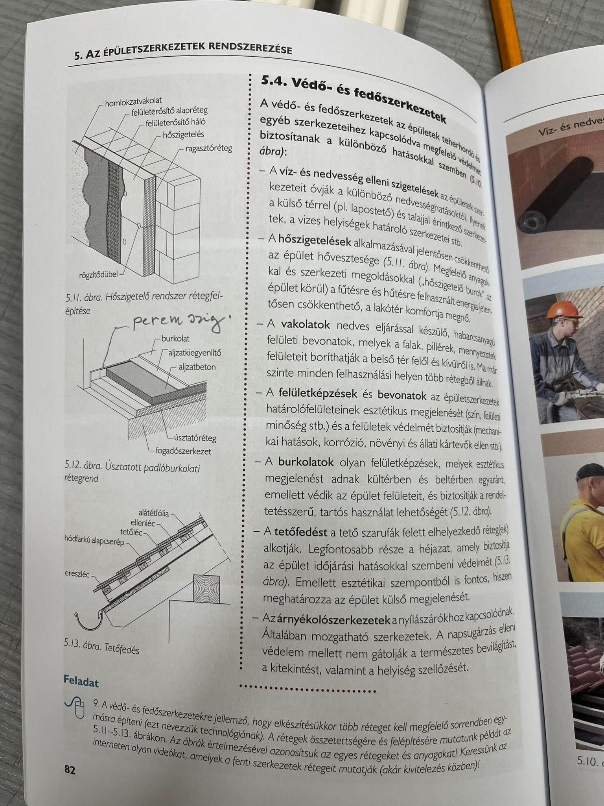

Teherhordó fal
A meglévő falszerkezet a rétegrend alapja. A felületnek alkalmasnak kell lennie a rendszer fogadására.
Épületszerkezetek · rétegrendi tananyag
Görgetés közben építsd fel a forrásábra három különböző szerkezetét: a homlokzati hőszigetelést, az úsztatott padlóburkolatot és a tetőfedést. Kövesd, melyik réteg mire kerül, és mi a feladata.
01 · Külső falszerkezet
A rétegek a teherhordó fal külső oldalára kerülnek. Haladj a faltól kifelé: ragasztás, hőszigetelő lap, erősített alapréteg, végül a homlokzati vakolat.
Rétegek felépítése
01 / 05A meglévő falszerkezet a rétegrend alapja. A felületnek alkalmasnak kell lennie a rendszer fogadására.
A hőszigetelő táblákat a rendszerhez előírt ragasztással rögzítik a falhoz.
A táblák folytonos hőszigetelő réteget alkotnak. A rajzon rögzítődübel is látható; annak típusa és kiosztása rendszerfüggő.
Az üvegszövet hálót az alaprétegbe ágyazzák. Ez erősíti a felületet és segít a repedések mérséklésében.
A külső, látható bevonat védi és kialakítja a homlokzat felületét. A rétegrend együtt, rendszerként működik.
02 · Padlószerkezet
Itt a fogadószerkezettől haladunk felfelé. Az úsztató réteg elválasztja a fölötte készülő aljzatot az alsó szerkezettől; a peremszigetelés a fal melletti kapcsolatot választja le.
Rétegek felépítése
01 / 05A teherhordó födém vagy aljzat, amelyre a padlórétegek készülnek.
Az úsztató réteg anyaga a kialakítástól függ. A függőleges peremszigetelő sáv a falat választja el a padlótól; nem egy újabb vízszintes réteg.
Az úsztató rétegen fekvő aljzatbeton elosztja a terheket. A réteg nem kapcsolódhat mereven a falhoz, ha úsztatott szerkezet készül.
A burkolás előtt kialakítja a szükséges, egyenletes fogadófelületet. A terméket és vastagságot az aljzat állapota határozza meg.
A járólap a legfelső, használatnak kitett réteg. A rajz rétegrendi szemléltetés; a burkolatragasztó és fuga nincs külön feltüntetve.
03 · Magastető
A tető rétegei a szarufák felől kifelé épülnek. Az ellenlécek légrést alakítanak ki az alátétfólia felett; a tetőlécekre kerülnek a cserepek.
Rétegek felépítése
01 / 05A tető teherhordó faelemei, amelyekre a bemutatott fedési rétegrend épül.
A fedés alá kerülő másodlagos védőréteg. Nem azonos a hőszigeteléssel, és nem helyettesíti a teljes tető rétegrendjét.
Az alátétfólia fölött, a szarufák irányában futnak. Légrést biztosítanak a fedés alatt.
Az ellenlécekre keresztben rögzülnek; a kiosztásukat a választott cserép és a gyártói előírás határozza meg. Az ereszlécet a rajz a tető alsó szélén külön is jelöli.
A cserepek adják a külső héjazatot, amely védi az épületet az időjárástól.
Kiinduló ábra
A könyv ábrái mutatják a magyarázat alapjául szolgáló szerkezeteket. Kattints a fotóra a teljes méretű kép megnyitásához.
